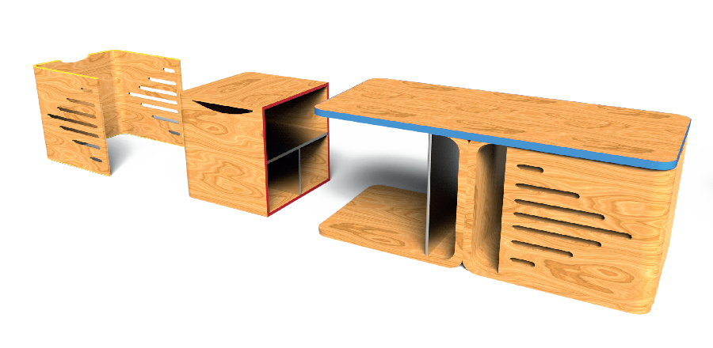
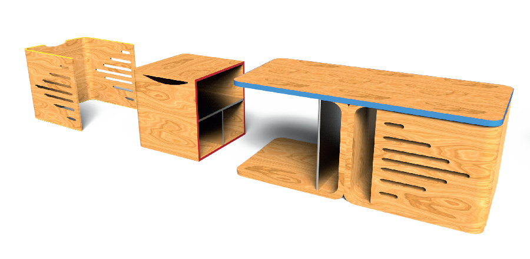

MODULAR
The theme of the competition was "Give colors to the gray matter", imagine an innovative piece of furniture, astute and modulable, adapted to the constraints of the current modes of lives
 

The lack of space in the apartments is a recurring problem due to the increase and the migration of the populations towards the big cities.
The ModUlar is a modular and compact piece of furniture with a coffee table, two stools and two storage modules. It responds to the needs of space in homes because it allows to save space in a very short time
Client: Alinéa (2nd prize for public online votes) Date: October 2015
Service: Product Design, Furniture Design, Innovative Solutions, Eco-Conception